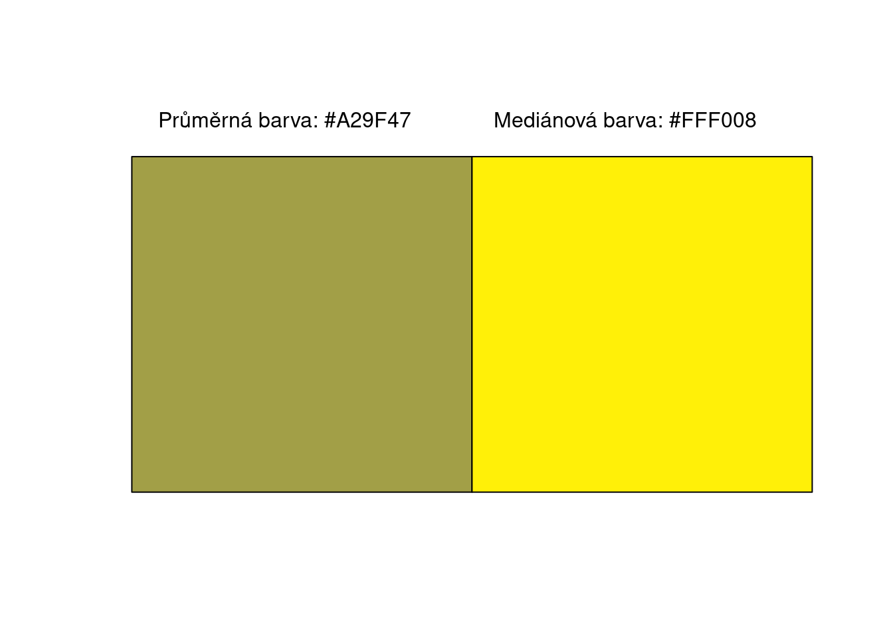

Úvod do statistiky
2022-03-06
Kapitola 1 Úvod
Tato kniha navazuje na kurz Základy logiky a matematiky (JSB536), ale jeho absolvování není nutné k pochopení látky.
Statistika je nástroj, který aplikuje matematiku na získání užitečných informací z dat.
Roli statistiky je možné rozdělit na dva úkoly:
Popisování většího množství dat (popisná statistika)
Předpovídání nějakého fenomenu/určení míry nejistoty (inferenční statistika)
1.1 Příklad popisné statistiky
Mnoho fenomenů v každodenním světě je možné vyjádřit pomocí dat. Fotka se dá vyjádřit jako 3D matice (red, green, blue) řádků a sloupců, která vyjadřuje jednotlivé pixely.
Lidl Stiftung & Co. KG, Public domain, via Wikimedia Commons
obrazek <- png::readPNG("../imgs/img1.1.svg.png")
dim(obrazek)## [1] 480 480 3Můžeme například zobrazit hodnoty červené barvy prvních 5x5 pixelů.
obrazek[1:5, 1:5, 1]## [,1] [,2] [,3] [,4] [,5]
## [1,] 1 1 1 1 1.0000000
## [2,] 1 1 1 1 1.0000000
## [3,] 1 1 1 1 1.0000000
## [4,] 1 1 1 1 1.0000000
## [5,] 1 1 1 1 0.3215686Můžeme zobrazit pouze nějaké řádky a sloupce:
plot(0:1, 0:1, type = "n", ann = FALSE, axes = FALSE)
rasterImage(obrazek[125:325, 100:300, ], 0, 0, 1, 1)Můžeme vypočítat průměrnou nebo medianovou barvu.
# vypocitame prumer pro kazdou barvu (cervena, zelena, modra)
prumerna_barva <- sapply(1:3, function(i) mean(obrazek[, , i]))
# vypocitame barvu na rgb skale
prumerna_barva <- rgb(prumerna_barva[1], prumerna_barva[2], prumerna_barva[3])
# vypocitame median pro kazdou barvu (cervena, zelena, modra)
median_barva <- sapply(1:3, function(i) median(obrazek[, , i]))
# vypocitame barvu na rgb skale
median_barva <- rgb(median_barva[1], median_barva[2], median_barva[3])
# zobrazime v grafu
plot(1,1,
type = "n", axes = FALSE, ann = FALSE,
xlim = c(0, 2), ylim = c(0, 1))
rect(0, 0, 1, 0.9,
col = prumerna_barva)
text(0.45, 1, labels = paste0("Průměrná barva: ", prumerna_barva))
rect(1, 0, 2, 0.9,
col = median_barva)
text(1.45, 1,labels = paste0("Mediánová barva: ", median_barva))
Protože obrázek je matice dat, můžeme na ni uplatnit různé statistické metody. Zajímá nás například, jaké odstiny barev jsou použité v tomto logu. Vidíme, že logo se skládá ze tří barev a můžeme extrahovat 3 barevy pomocí shlukovacího algoritmu.
set.seed(42)
k <- 3
cervena <- as.vector(obrazek[, , 1])
zelena <- as.vector(obrazek[, , 2])
modra <- as.vector(obrazek[, , 3])
m <- kmeans(cbind(cervena, zelena, modra), centers = k)
barvy <- m$centers
barvy_rgb <- rep(NA, k)
plot(seq(1, k * 10 + 10, length.out = 10), seq(1, 10, length.out = 10),
axes = FALSE, ann = FALSE, type = "n"
)
for (i in 1:k) {
barvy_rgb[i] <- rgb(barvy[i, 1], barvy[i, 2], barvy[i, 3])
rect(i * 10, 1, i * 10 + 10, 8, col = barvy_rgb[i])
text(i * 10 + 5, 9, labels = barvy_rgb[i])
}
1.2 Příklad inferenční statistiky
Většina jevů okolo nás je ovlivněna náhodou, ať už z důvodu náhodného výběru nebo protože jsou součástí nějakého komplikovaného systému, který ovliňuje hodnoty jevu, který nás zajímá. Počet aut, které projedou na mostě, délka toaletního paríru, který je vyrobený v továrně, to jsou některé příklady jevů, které jsou ovlivněny náhodou. Statistika nám poskytuje soubor nástrojů, jak tuto náhodu (nejistotu) kvantifikovat. Pohlaví dětí je určeno náhodou a nově narozené dítě má zhruba stejnou pravděpodobnost, že bude děvče nebo chlapec. Řekněme, že z důvodu kapacitního plánování nás zajímá, kolik chlapců se narodí, pokud se v porodnoci denně narodí 25 dětí (sám počet narozených dětí by se dal modelovat jako náhodná proměnná).
n <- 25
p <- 0.5
x <- c(0:25)
pmf <- dbinom(x = x, size = n, p)
plot(x, pmf,
type = "h",
xlab = "Počet chlapců z 25 narozených dětí", ylab = "Pravděpodobnost",
lwd = 15,
col = "#1f77b4"
)Graf 1.1: Pravděpodobnostní rozložení počtu chlapců z 25 narozených dětí
Vidíme, že nejpravděpodobněji se narodí 12 chlapců (v 31% případů). Můžeme také z grafu vypočítat, že více než 15 chlapců se narodí zhruba v 11% případů, tedy zhruba 42 dní v roce.
1.3 Simulace
K pochopení statistiky budeme používat programovací jazyk. Ten nám umožní, abychom si statistické koncepty osahali detailně. Budeme simulovat data, u kterých budeme vědět pravé hodnoty a sledovat, jak (ne)úspěšně různé statistické postupy pravé hodnoty odhadují. Cílem je, abychom statistiku pochopili tak, že ji budeme moci použít na konkrétní problém. Chceme dosáhnout toho, aby statistika byla jazykem, který můžeme použít na různé datové problémy.
K pochopení statistiky budeme používat programovací jazyk R. Našim cílem je ale koncepty vysvětlovat a kódovat obecně tak, aby postupy byly lehko přenositelné do jiného programovacího jazyka. Vždy si tedy vysvětlíme konkétní výpočet nebo proceduru do podrobna a to i když existuje balíček nebo funkce, která by daný výpočet provedla za nás.
1.4 O modelech
Modely jsou reprezentaci reality. Jsou (někdy) užitečné, protože zjednodušeně ukazují vlastnosti toho, co nás zajímá. Glóbus je příkladem modelu planety země. Glóbus nevystihuje přesně to, jak planeta vypadá. Nejsou na něm zaznamenány všechny ostrovy, jeho tvar neodpovídá přesně tvaru naší planety. Přesto jsou glóbusy užitečné k pochopení toho, jak planeta vypadá. Dalším příkladem modelu je mapa. Mapa je ještě více zkresleným modelem terénu než glóbus (mapa musí vněstnat 3D svět do 2D modelu). Mnoho map dokonce velmi nepřesně reprezentuje terén, přesto jsou ale mapy nesmírně užitečné když se potřebujeme dostat z bodu A do bodu B. Stejně je tomu s modely statistickými. Nejsou přesným vyjádřením reality, ale mohou být užitečným vyjádřením reality. Jejich užitečnost bude záviset na činnosti, pro který jsme tento model stvořili. Důležité je dodat, že naše modely (ne)fungují na datech, které jsme jim dodali. Model, který je užitečný na jedněch datech může být bezcenný na jiných datech. Je tedy vždy potřeba přemýšlet o tom, zda je náš model vhodný pro data a situaci, na kterou se ho snažíme použít.